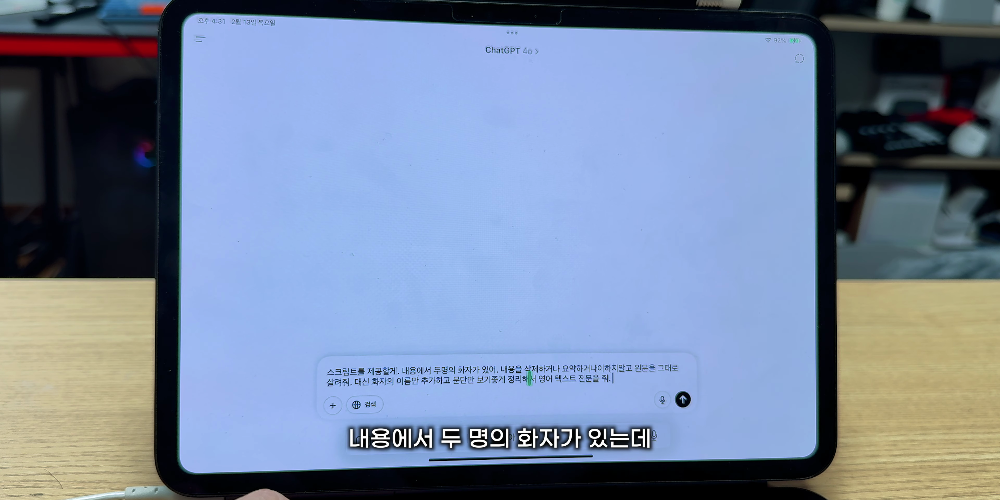

이 포스트에서는 아이패드의 다양한 기능을 활용하여 효과적으로 외국어를 공부하는 최신 방법을 소개합니다. 영상에서 제시된 유용한 팁과 도구를 살펴보며, 학습 효과를 극대화 할 수 있는 방법을 배워보세요.
아이패드 활용법 소개
- 아이패드를 활용한 스마트한 외국어 공부 방법
아이패드를 효율적으로 활용하여 최신 외국어 공부 방법을 소개합니다.
유튜브의 자막 기능 활용
- 유튜브에서 외국어 콘텐츠 자막 사용
- 사파리 브라우저에서 공식 자막 확인
유튜브에서 외국어 콘텐츠를 시청할 때, 사파리 브라우저를 통해 공식 자막을 이용할 수 있는 방법을 소개합니다.
스크립트 표시 기능
- 유튜브 스크립트 확인 방법
- 타임스탬프 전환 기능 소개
사파리에서 유튜브 영상을 시청할 때, 스크립트 표시 기능을 이용하여 깔끔하게 스크립트를 확인하고 공부할 수 있는 방법을 알려드립니다.

스크립트 복사하기
- 스크립트 복사하는 방법
- 메모앱에 저장하기
대본 스크립트를 쉽게 복사하여 메모앱에 저장하는 방법을 소개합니다.
애플 페이지스 활용법
- 애플 페이지스에서 유튜브 영상 삽입하기
- 대본을 정리하는 방법
애플 페이지스를 사용하여 외국어 공부 대본을 작성하고, 필요한 유튜브 영상을 삽입하는 법을 알려드립니다.
AI를 통한 텍스트 최적화
- AI를 활용한 텍스트 최적화 방법
- 표현 정리와 단어 학습
AI를 통해 자신의 외국어 표현 및 단어를 정리하고, 학습 효과를 높이는 방법을 소개합니다.

프리폼 기능 활용하기
- 프리폼으로 반복 학습하기
- 애플 펜슬로 자유롭게 연습
프리폼 기능을 활용하여 반복적으로 기억하고 싶은 내용을 연습하는 방법을 설명합니다.
레븐 리더 활용법
- 레븐 리더 앱을 통한 텍스트 음성 변환
- AI 보이스로 다시 들어보기
레븐 리더 앱을 사용하여 AI 보이스로 텍스트를 재생하고, 다양한 음성 스타일로 학습할 수 있는 방법을 소개합니다.
Tags: #아이패드 #외국어 공부 #유튜브 #사파리 #AI #레븐 리더 #프리폼 #페이지스 #스크립트